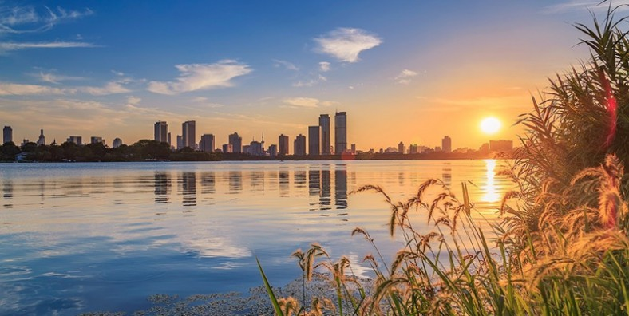

Nanjing is the capital of Jiangsu province of the People's Republic of China and the second largest city in the East China region, with 11 districts, an administrative area of 6,600 km (2,500 sq mi) and a total population of 8,505,500 as of 2019 .Situated in the Yangtze River Delta region, Nanjing has a prominent place in Chinese history and culture, having served as the capital of various Chinese dynasties, kingdoms and republican governments dating from the 3rd century to 1949, and has thus long been a major center of culture, education, research, politics, economy, transport networks and tourism, being the home to one of the world's largest inland ports.

Get to Know Nanjing
Enjoy Your Time
Exit and Entry
Transport Informations are provided
-
Nanjing Lukou international airport(NKG) is the “Gate” of Jiangsu Province, the third largest airport in eastern China.
-
Nanjing Ma’an International Airport: is the second international airport in Nanjing.
-
Nanjing Railway Station: which is built for high speed trains and ordinary trains. 28 miles (46 kilometers) from Lukou International Airport.
-
Nanjing South Railway Station: which is built for high speed trains only. 18 miles (29 kilometers) from Nanjing Lukou International Airport.
Adress:Yingbin Rd, Jiangning District, Nanjing, Jiangsu, China.
Adress:Ma’an Street, Liuhe District, Nanjing City, Jiangsu
Nanjing Train
The best thing about trains in china is that you can choose any type of seat you want in Chinese trains like Business class, first class, second class, soft sleeper, hard sleeper, also has high speed
trains. There are two railway stations in Nanjing.
Adress:Longpan Road, Xuanwu District
Adress:Yulan Road, Yuhuatai District